曲面描画ツール ユーザーズマニュアル
曲面描画ツール
ユーザーズマニュアル
この描画ツール (以下 Persと呼びます) は z = f(x, y) で定義される関数のグラフ(曲面)を
隠線処理が施されたメッシュ (赤い線は z ≧ 0、青い線は z ＜ 0)で描画します。
web版でも
同様のツールを公開しています。
web版では、予め用意された関数をリストから選択して、曲面を描画する機能が主です。
ユーザーが定義した関数を描画する機能も備えていますが、定義された関数の保存や読み込みはできませんでした。
一方、Persはユーザーが独自に関数を定義する機能を強化し、定義された関数の保存、読み込み機能を提供します。
[Ⅰ] "画面について" 簡単にまとめます。
Fig. 1-1
[a] データファイル選択
クリックするとデータファイルを選択するダイアログボックスが開きます。 デフォルトでは "log" というフォルダーと、 "PersData_01.pers_dat" と "PersData_sample.pers_dat" という2つのデータファイルが表示されます。 "log"フォルダーについては [h] ログ出力有無 で説明します。
Fig. 1-2
データファイルは拡張子が "pers_dat"となっています。 単なるテキストファイルですが、他のファイルと間違えることがないように、ユニークな拡張子にしています｡ 拡張子が表示されない場合でも、pers_datファイルしか表示されないので、安心してください。
デフォルトでは、起動時に "PersData_sample.pers_dat" のデータが使用されるように設定されています。
試しに "PersData_01.pers_dat" を選択してみてください。

Fig. 1-3
実は "PersData_01.pers_dat" には関数式のデータが1つも登録されていないので、いきなり "User Defined"(ユーザー定義)が選択された状態になります。 これでは先に進めませんので、もう一度、[LOAD]ボタンを押して "PersData_sample.pers_dat" を選択してください。
Persを初めて起動したときと同じ画面になるはずです("Fig.1-1" 参照)。
これからはサンプルデータ "PersData_sample.pers_dat" が使用される前提で、説明を行います。
[b] 関数選択
コンボボックスのメニューボタンを押すと、登録されている関数式が表示されます。

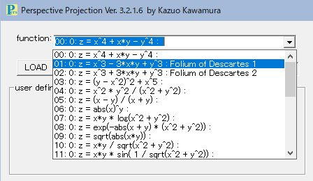
Fig. 1-4
例えば、"01" をクリックすると、以下の画面が表示されます。

Fig. 1-5
[c] パラメーター設定
パラメーター設定については、
2章 ([Ⅱ] ユーザー定義関数について) の以下のセクションで説明します。
[03] パラメーター付きの関数式
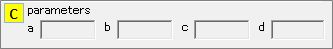
[d] ユーザー定義関数設定
現在選択されている関数の式とコメントが表示されます。 コメントが入力されていない場合は、ここに示されているように空欄になります。 Fig.1-5では、入力されたコメントが表示されています。
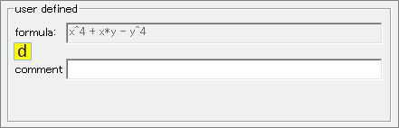
詳しくは2章([Ⅱ] ユーザー定義関数について)で説明します。
[e] 描画範囲設定
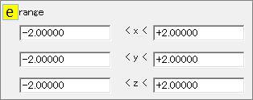
zについては関数の値がレンジを超えた場合は、x-y面と平行な平面が描かれます。 これだと境界が分かりづらいのでz : max, 0, minの3ヶ所で等高線を描くことで、 境界を明確にしています。 [g] 描画アングル設定で説明するgamma角(上下の視点位置)を90度、或いは-90度にセットすると 陰関数のグラフが描画されます。
Fig. 1-6
[f] メッシュ設定
描画に使用するラインの数を設定します。 "calculation" は計算で使用するライン数です。 "drawing" は実際に描画するライン数です。
ライン数を大きくするとメッシュが密になり曲面がなめらかに表示されますが、 計算量が増えるので、描画された曲面を回転させるときの動きがギクシャクすることがあります。

設定範囲は "1～120" です。実際には "20" 或いは "40" 位が妥当ではないかと思います。 "calculation" の設定値が変更された場合は "drawing" に自動でコピーされます。 デフォルトは"calculation", "drawing"とも 20 です。※註
"drawing" には "calculation" の設定値がコピーされるので、通常は変更する必要はありません。 しかし、意図的に描画するラインの本数を減らしたいときなどは、 "calculation" で設定された値の1/2, 1/4などを指定してください。
変更後は[Start] ボタンを押すことで、再描画されます。
[g] 描画アングル設定
"alpha" は視点位置の水平方向(z軸廻り)の角度を設定します。 "gamma" は視点位置の上下方向の角度(俯角[-]/仰角[+])を設定します。
角度を正確に指定したいときはテキストボックスに角度を入力してください。
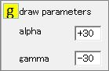
ただし、描画ウインドウ右側のスライダーが "alpha" に、下部のスライダーが "gamma" に連動しているので、 通常はスライダーを動かすとそのときの角度が表示されます。 デフォルトは"alpha" : 30度、"gamma" ：-30度です。※註， ([m] 描画アングル設定(スライダーバー) 参照)
変更後は[Start] ボタンを押すことで、再描画されます。
[h] ログ出力有無
[log output] にチェックを入れると、 [log]フォルダーにメッシュと描画範囲で指定された(x, y, z)のデータを出力します。

チェックを入れた後で、[Start] ボタンを押すことでログが出力されます。

Fig. 1-7
描画範囲内で不連続点を含む関数を描画するとき、不連続点にどのような値が出力されているのかなどの 解析に役立ててください。
[log]フォルダー内にできるファイル名は "debug.log" 固定です。 追記モードで書き加えていくので、確認の必要がなければ、チェックを外してください。 関数選択コンボボックスで別の関数を選択すると、チェックが消えます。 また、Persを起動したときはチェックは入っていません("Fig.1-1" 参照)。
[i] 不連続点の置換有無
メッシュに沿ってz値を求めるとき、分母が0になったり、分子・分母とも0になることがあります。

このような場合、計算結果は"inf", "-inf", "nan", "-nan(ind)"などの非数になります。 グラフを描画させると、それらの部分が何も描かれず、欠損した状態になります。
Fig. 1-8
このように欠損が生じた場合、[discontinuity points replacement]をチェックすると、 不連続点(線)が以下のように置換されます。
| 計算結果 | 置換 |
|---|---|
| inf 9999.0より大 |
9999.0 |
| -inf -9999.0より小 |
-9999.0 |
| -nan(ind) | 1つ手前の座標の計算結果 |
| nan | 1つ手前の座標の計算結果 |
[START]ボタンを押すと、置換とともに描画時に不連続点(線)と置換内容を示すメッセージが表示されます。 ただし、置換する数が大量になることもあるため、毎回メッセージが表示されると鬱陶しいので、メッセージは1度だけ表示されます。 不連続の原因が複数ある場合も、まとめて1度だけ表示されます。 詳しく調べたい場合は、[h] ログ出力有無 を参照してください。
Fig. 1-9

Fig. 1-10
この置換は、完全ではなく、まだ私が気づいていない原因で不連続になるケースも出てくる可能性があります。 そのような関数式が出てきた場合は、是非、私にお知らせ下さい。対処できるようでしたら、改善します。
[j] 座標軸表示有無
[axis] にチェックを入れると、座標軸が表示されます。 Persの場合、z軸は常に垂直になるので、x, y軸のみの表示になります。

Fig. 1-11
[k] 描画更新
描画範囲、メッシュを変更したり、チェックボックスをONにした場合は [START]ボタンを押してください。描画ウインドウが更新されます。

[l] 描画リセット
描画アングルを登録されている関数のデフォルト値に戻したいときは [RESET]ボタンを押してください。描画ウインドウがリセットされます。
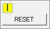
ただし、メッシュ、描画範囲の変更、チェックボックスをON/OFFは保持されます。
[m] 描画アングル設定(スライダーバー)
描画ウインドウ右と下のスライダーを動かすことで描画アングルがリアルタイムで更新されます。
それらの値は"draw parameters" の"alpha" と "gamma" に反映されます([g] 描画アングル設定 参照)。
[n] ツールの終了
ボタンを押すと、Persが終了します。
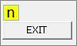
[o] 編集機能
編集機能については2章([Ⅱ] ユーザー定義関数について) の以下のセクションで説明します。
[05] 関数の設定を変更した場合の処理について
[06] 登録した数式の削除について
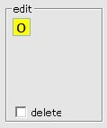
[p] 遠近表現の設定 (draw parameters: L, D)
一般に、ある物体に視点を近づけると、 視点に近い部分は大きく、遠い部分は小さくなり、遠近感が生じます。
逆に、視点が物体から十分に遠ければ、遠近感はほとんど生じません。
D は描画ウインドウから物体(曲面)までの距離で、仕様として "10" に固定されています。

L は視点から描画ウインドウまでの距離で、デフォルトでは "1000" に設定されています。 この場合、遠近効果はほとんど生じず、斜投象で曲面が描画されます。
Persは斜投象で描くことを目的としているので、L=1000, D=10 の固定で良かったのですが、 Persの設計では遠近効果が考慮されているため、L の値を変更することができます。
設定できる範囲は、1000～10までです。
設定したら [START]ボタンを押してください。設定が曲面の描画に反映されます。 L を 20～10 位に設定すると、遠近効果が現れていることが一目で分かります。
しかし、遠近効果はPersの目的ではないので、通常は L を変更する必要はありません。

Fig. 1-12
※註 : 選択された関数によっては、異なる値が設定されている場合があります。
[Ⅱ] "ユーザー定義関数について" 簡単にまとめます。
註 : 登録できるユーザー定義関数の最大数は98です。
関数式を選択するコンボボックスで "99 User Defined" を選択すると、 数式(formula)とコメント(comment)を入力する2つのテキストボックスが表示されます。
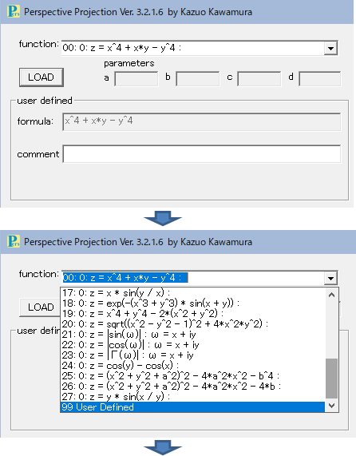

Fig. 2-01
この画面は "Fig.1.3" と同じです。 "Fig.1.3" に示されている画面は、データファイルの選択で "PersData_01.pers_dat" を選択したら いきなり現れたのでした。 "PersData_01.pers_dat" は元々、ユーザー定義関数を追加して行くために用意されている空のファイルです。
せっかくなので、このファイルにユーザー定義関数を追加して行くことにしたいと思います。
[LOAD]ボタンを押して、ダイアログボックスから"PersData_01.pers_dat" を選択してください。 "Fig.2-01" と同じ画面が表示されます。

Fig. 2-01-1
formula:
x, y の2変数関数式を入力します(必須)。
comment:
コメントを入力しますが、必須ではありません。 詳しくはを [02] コメント欄について を参照してください。
関数式の入力例)
f(x, y) = x^2 + y^2 或いは z = x^2 + y^2 の場合、 右辺の "x^2 + y^2" のみ入力してください。

Fig. 2-02
ユーザー定義された関数式の評価は、 TinyExpr で行っています。 式は(x^2 + y^2)など、テキストとして表現できる形式であれば問題ありません。 関数式を定義するときに使用できる演算記号と数学関数は以下の通りです。
演算記号
四則演算 "+, -, *, /" や、べき "^" などが使えます。 但し、平方根 "√" や絶対値記号 "|…|"はそれぞれ、sqrt()、abs() を使用してください。
数学関数
sin, cos, exp, log, pow などの通常の関数が使用できます。
使用できる関数は以下の通りです(曲面の描画と関係なさそうな関数は省いています)。
abs, acos, asin, atan, atan2, cos, cosh, e, exp, gamma, ln, log, log10, pow, sin, sinh, sqrt, tan, tanh
c, c++ の標準関数ライブラリ "math.h" との対応関係ついては、[04] 入力ミスについて を参照してください。
[CHECK]ボタンを押下すると数式の評価が行われ、構文が正しい場合は入力された関数の曲面が描画されると共に、[SAVE]ボタンが現れます。

Fig. 2-03
入力された数式の評価で、エラーがあるとメッセージが表示されますが、使用した関数が未定義の場合もありますので、確認してください ([04] 入力ミスについて 参照)｡
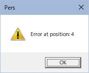
Fig. 2-04
数式の誤りを修正したら再び[CHECK]ボタンを押してください。 正常に修正されていれば Fig. 2-03 の画面になります。 未定義の数学関数 (例えば asinh, acosh) などが使用されていることが分かった場合は、 数式の登録は不可能なので、[CANCEL]ボタンを押してユーザー定義モードを終了してください。 [CANCEL]ボタンを押すと、入力中のデータがクリアされて、初期表示の画面に戻ります。
[SAVE]ボタンを押す前に、ファイルへ書き込まれる設定項目についてまとめておきます。
range
x, y, z それぞれの描画範囲を設定します。 デフォルトではx, y, z とも-2.00000～+2.00000ですが、個別に設定できます｡ 詳しくは1章 ([Ⅰ] About the screen) の [e] 描画範囲設定 を参照してください。
draw parameters
alpha (z軸回りの回転角度)、gamma(x-y平面を見込む角度)の設定ができます｡ 詳しくは1章 ([Ⅰ] About the screen) の ([g] 描画アングル設定 を参照してください。
alpha angle : -180 to 180 deg.
gamma angle : -90 to 90 deg.
line number
描画するメッシュを構成する線の数を設定します｡ 詳しくは1章 ([Ⅰ] About the screen) の ([f] メッシュ設定 を参照してください。
calcration : 計算する線の数を指定します｡
drawing : 描画する線の数を指定します｡通常は "calcration" で設定された数がセットされるので、変更の必要はありません。
設定項目を変更した場合は[CHECK]ボタンを押して描画を確認してください。 [CHECK]ボタンは何度でも押すことができます。
関数を登録せずにユーザー定義モードを終了する場合は、[CANCEL]ボタンを押してください。 入力中のデータがクリアされて、初期表示の画面に戻ります。 今回、[CANCEL]ボタンが押された場合は、まだ関数が登録されていないので、 Fig. 2-01 で示されている画面が表示されます。 [SAVE]ボタンを押す前であれば、[CANCEL]ボタンはいつでも押すことができます。
[SAVE]ボタンを押すと、入力された関数式がデータファイルに書き込まれ、関数式を選択するコンボボックスにも追加されます。

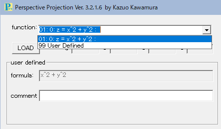
Fig. 2-06
コメント欄には以下の3通りの使い方があります。
-
コメントの必要がなければ、空欄のままで結構です。
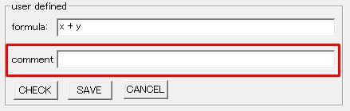
Fig. 2-07
例)
データをセーブすると、関数式を選択するコンボボックスに以下のリストが追加されます。

Fig. 2-08
-
関数式に固有の名前がある場合や、メモとして残しておきたい内容を入力します。
補足: このあとは入力された数式が正常であると評価され、[SAVE]ボタンが表示されたものとして説明を続けます。
例)
formula: x^3 - 3*x*y + y^3
comment: デカルトの葉線
Fig. 2-09
データをセーブすると、関数式を選択するコンボボックスに以下のリストが追加されます。
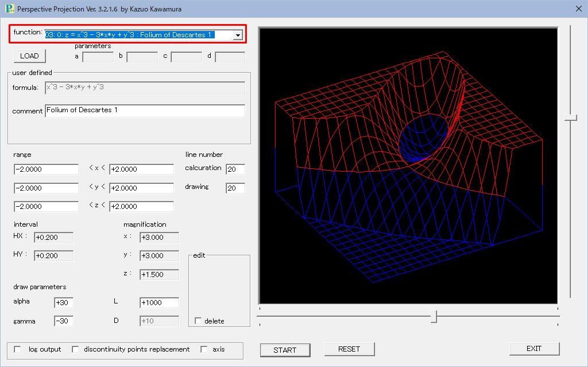Fig. 2-10
-
関数式が長すぎる場合、代替えの式を入力することができます。
補足: 代替えの式を入力する場合は、先頭にアポストロフィー "'" を付けます。
例)

Fig. 2-11
データをセーブすると、関数式を選択するコンボボックスに以下のリストが追加されます。
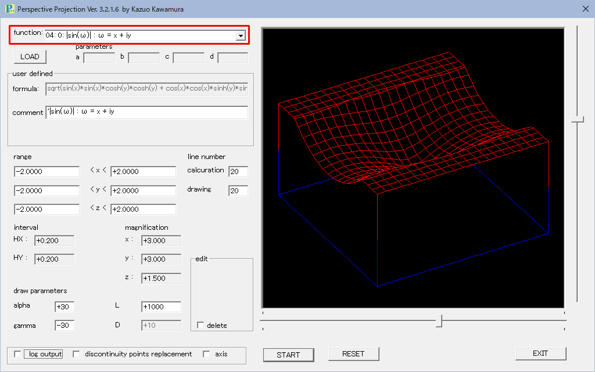Fig. 2-12
補足: 関数式として直接 "abs(sin(x + i*y))" と入力しても、 数式を評価する段階で(虚数 "i" は定義されていないので)エラーになってしまいます。
関数式はあくまでも "x" と "y" の2変数で定義する必要があります。
従って、"|sin(ω)| : ω = x + iy" の場合は "x" と "y" を用いて展開し、
展開された "sqrt(sin(x)*sin(x)*cosh(y)*cosh(y) + cos(x)*cos(x)*sinh(y)*sinh(y))" を "formula" に入力する必要があります。
定義する関数式に "a～d" までのパラメータを持たせることができます。
数式に "a" から "d" までの文字が含まれている場合、 数式を入力した後に[Tab]キーを押すかコメント欄をクリックすると、 それらの文字に対応する"parameters" 入力ボックスが有効になります。
例)
formula: (x^2 + y^2 + a^2)^2 - 4*a^2*x^2 - b^4
comment: Cassini oval
この関数式はパラメーターa, b にいろいろな値をセットすることで、様々な形状の曲面が描画されます。 そして、z = 0 のときの等高線は "Cassini oval" と呼ばれます。
Fig. 2-13
aとbに適当な数値を入力して、[CHECK]ボタンを押すと、パラメーターで指示された曲面が描画されます。 aとbの値を変えて、希望の形状が得られたら、[SAVE]ボタンを押してください。
Fig. 2-14
[SAVE]ボタンを押すと、関数式を選択するコンボボックスのリストに「(x^2 + y^2 + a^2)^2 - 4*a^2*x^2 - b^4 : カッシーニ楕円」が追加されます。 パラメーター入力ボックスaとbには保存したときの数値が表示されるようになります。 再び、aとbの値を変えて形状の変化を確認するときは、[START]ボタンを押してください。

Fig. 2-15
ちなみに、a = +1.0, b = +1.2のときの "Cassini oval" は以下のようなオーバルになります。
Fig. 2-16
関数式を定義するとき、"x^3 - 3*x*y + y^3" などは、ついつい "x^3 - 3xy + y^3" と書いてしまいがちですが、 [CHECK]ボタンを押すと数式として評価する段階でエラーメッセージが表示されます。
Fig. 2-17
エラーメッセージが表示されるとき、大抵は "2x" など "*" の書き忘れです。
次は括弧の閉じ忘れでしょうか。
数学関数を使用している場合は、未定義の関数を使用していないかチェックしてみてください。
TinyExprがサポートしている数学関数一覧 (曲面の描画に関係なさそうな式は省略しています) を以下に示します。 関数は c, c++ 標準の "math.h" ライブラリに基づいていると考えられます。
| TinyExpr | math.h |
|---|---|
| abs | fabs |
| acos | acos |
| asin | asin |
| atan | atan |
| atan2 | atan2 |
| cos | cos |
| cosh | cosh |
| e | e |
| exp | exp |
| gamma | tgamma |
| ln | log |
| log | log |
| log10 | log10 |
| pow | pow |
| sin | sin |
| sinh | sinh |
| sqrt | sqrt |
| tan | tan |
| tanh | tanh |
登録されている関数を表示しているときにメッシュや描画範囲、アングルなどを変えてグラフを描き直すと、 その関数の特徴が際立つ場合があります。 或いは、コメントを書き加えたり、修正したいと思われるケースが生じる可能性も考えられます。 このような場合は、これらの変更内容を新しいデータセットとして保存することができます。
※ 設定値を変更して保存できるデータ数は、関数毎に最大9です。
以下に具体例を2つ示します。
<1>
現在、コンボボックスのリストの4番目には "|sin(ω)| : ω = x + iy" が登録されているはずです。 この関数式を登録したときは、 描画範囲はデフォルト値のままでした (コメント欄の説明 関数式が長すぎる場合 を参照)。
Fig. 2-18
実はこの関数は描画範囲を変更すると、関数の性質が分かり易くなります。
コンボボックスのリストから "04: 0: |sin(ω)| : ω = x + iy " を選択してください。
"range" と "line number" を以下のように変更します。
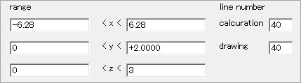
Fig. 2-19
[START]ボタンを押すと描画ウインドウが更新され、画面の中央下に[mod save]ボタンが表示されます。
"range", "line number"を変更して[START]ボタンを押すと、[mod save]ボタンが表示されるようになります。

Fig. 2-20
[mod save]ボタンを押すと修正を反映したデータがリストに追加されます。

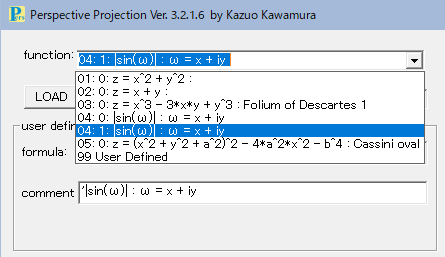
Fig. 2-21
<2>
パラメータ付きの関数式で説明した "Cassini Oval" のパラメーターを変更してみます。 関数を定義したとき、パラメーターa とb にはそれぞれ "1.0" と "1.2" がセットされていました。

Fig. 2-22
"a, b" とも "0.6" に変更して[START]ボタンを押すと、グラフの形状が次のように変化します。 <1>の時と同様に [mod save]ボタンが表示されます。
Fig. 2-23
これではちょっと分かりませんが、アングルを変えると面白い等高線が現れます。

Fig. 2-24
"z = 0" の等高線が8の字になっています。 これはベルヌーイのレムニスケートと言われる曲線です。
この状態を保存することにします。 [mod save]ボタンを押すと修正を反映したデータがリストに追加されます。
Fig. 2-25
※ [mod save]ボタンが表示されるタイミング
コンボボックスから関数式を選び、"comment", "raneg", "line number" を変更して [START]ボタンを押すと [mod save]ボタンが表示されます。
アングルについては、スクロールバーを動かすことで、[mod save]ボタンが表示されます。
ファイルに登録されているデータの削除機能を持たせるかどうか迷ったのですが、 以下の機能を持たせることにしました。
この解説に従って操作されたと仮定すると、現在、以下の関数が登録されています。 "01: 0:" から "05: 1:" までのどの関数も削除することができます。

Fig. 2-28
例として、"02: 0: z = x + y" を削除してみることにします。
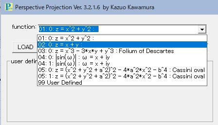
Fig. 2-29
"02: 0: z = x + y " を選択すると以下の画面が表示されます。

Fig. 2-30
赤枠で囲まれた "□ delete" に注目してください。 チェックを入れると[delete]ボタンが表示されます。

Fig. 2-31
[delete]ボタンを押すと、削除確認のメッセージが表示されるので、[はい]を押すと、 コンボボックスのリストから "02: 0: z = x + y " が削除されると共に、 データファイルからも削除されます。
実際に [delete]ボタンを押すと、以下の画面が表示されます。 リストから "02: 0: z = x + y " が削除されていることが確認できます。
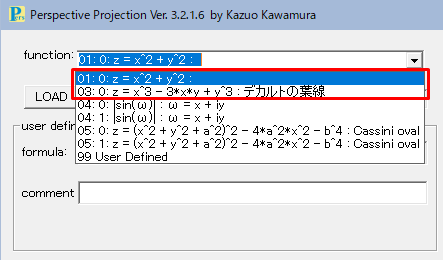
Fig. 2-32
削除されたデータの復元処理で、説明し易くするために もう一つデータを削除しておきます。

Fig. 2-33
"04: 1: |sin(ω)| : ω = x + iy" を同様の手順で削除します。
先ほど、関数の性質が分かり易くなるように、描画範囲を修正したばかりのデータです。 ですが、あえて削除します (間違えて削除してしまったことにしましょう)。 これで、登録されている関数は、5つになりました。

Fig. 2-34
<02> 削除されたデータの復元
データの削除は注意深く行われると思います｡ しかし、うっかり必要なデータを削除してしまうといったことも起こりえます。
そのような場合に備えて、削除されたデータは特定のファイルにバックアップされています。
バックアップファイルの開き方を説明します。

Fig. 2-35
[LOAD]ボタンを押してデータファイル選択ダイアログを開きます。 右下の赤枠部分をクリックすると現れる2行の段の2番目を選択します。
Fig. 2-36
"pers_dat.back_up" が表示されるので、選択します。

Fig. 2-37
すると [01] 登録されているデータの削除 の説明で削除した関数が表示されます。

Fig. 2-38
復元画面では [restore]ボタンが現れていることに注意してください。
関数選択コンボボックスから、先ほど、うっかり削除してしまった "04: 1: |sin(ω)| : ω = x + iy" を選択します。


Fig. 2-39, 40
赤枠内の[restore]ボタンを押すと、画面に表示されているデータが復元されます。 そして、以下のメッセージが表示されます。
Fig. 2-41
"はい" を選択すると、引き続きデータの復元を続けることができます。
"いいえ" を選択すると、復元されたデータが含まれるファイルが開きます。 画面には復元されたデータが表示されます。 何も変わっていないように見えますが、コンボボックスを開くと、バックアップファイルではなく、 復元されたファイルのリストが表示されることが確認できます。 またデータは削除される前と同じ位置に戻っています。

Fig. 2-42
全てのデータが復元された場合は、 最後に復元されたファイルが開き、画面に復元されたデータが表示されます。

Fig. 2-43
<03> 削除されたデータの完全削除
データを削除するときは、自動でバックアップされるので、 バックアップファイルには残しておく必要のないデータも含まれる可能性があります。 バックアップファイルからデータを削除する方法を説明します。
[02] 削除されたデータのリストア と同様に、バックアップファイルをロードしてください。
現在、バックアップファイルにはデータが1つだけ "PersData01: 02: 0: z = x + y " が残っているものと仮定します。
Fig. 2-44
画面の赤枠内の"□ delete" をチェックすると、[delete]ボタンが表示されます。
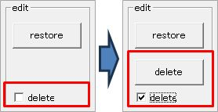
Fig. 2-45
[delete]ボタンを押すと画面に表示されているデータが削除されます。 この削除では本当にデータが消去されてしまうので、確認のメッセージが表示されます。 削除する場合は[はい]を押してください。
Fig. 2-46
コンボボックスに複数のデータが表示されているときは、続けて削除することができます。 今回の場合のように1つしかないデータを削除してしまうと、以下のメッセージが表示され、 データファイル選択ダイアログが表示されます。
Fig. 2-47
データ選択ダイアログが表示されたら、希望するデータファイルを選択してください。
[Ⅲ] その他
描画ウィンドウについては、背景、メッシュのライン、x,y軸の色を設定することができます。 ただし、画面からではなく、イニシャルファイルを編集することで設定します。
エクスプローラーで [Pers] フォルダーを開いてください。 中に[dat]フォルダーがあります。[dat]フォルダーを開くと、 "Pers_color.ini" というファイルがあります。これをテキストエディタで編集します。
"Pers_color.ini" の内容は以下の通りです：
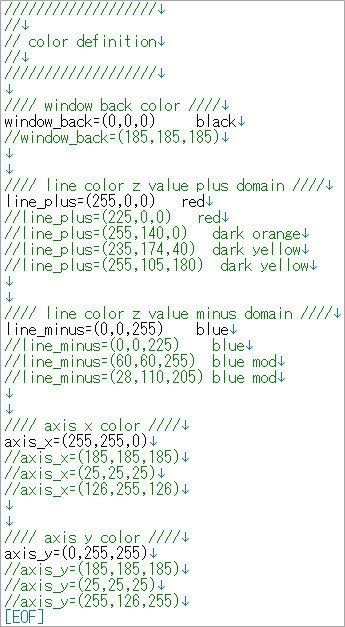
Fig. 3-01
空行と "//" で始まる行は、無視されます。
データとして有効なのは、以下の5行です。
| ブロック | タイトル | データ |
|---|---|---|
| window back color | window_back | (0,0,0) |
| line color z value plus domain | line_plus | (255,0,0) |
| line color z value minus domain | line_minus | (0,0,255) |
| axis x color | axis_x | (255,255,0) |
| axis y color | axis_y | (0,255,255) |
現在、データとして有効な5行は、これまでの説明で、使用されてきた色です。 また、iniファイルのデータがうまく読み込まれない場合は、デフォルトとして使用される色です。
各ブロックで "//" がついている行は、サンプルとして入れてあるものです。 "//" を外せば、そのデータの色が読み込まれます。
勿論、データはRGB形式で自由にセットすることができます。ただし、データ行の書式は変更しない下さい｡
書式：タイトル=(0-255,0-255,0-255) i.g. window_back=(185,185,185)
Persはメッシュで曲面をプロットするため、陰線処理にはかなり力を入れて設計したのですが、 見えないはずの線がプロットされてしまう場合があります。 この取扱い説明書で最初に示されている図 (Fig. 1-1) では 左端の部分で、乱れが生じています。
Fig. 3-02
この問題については、今後の課題としたいと思います。
Persは入力された数式を TinyExpr で評価しています。
しかし、式に "-x^2" 或いは "-y^2" が含まれている場合、評価を誤ります。
これらはマイナスの符号がつき、
累乗記号が使われ、その指数が "2" や"4" などの偶数" の場合です。
例えば、x=2 の場合 TinyExprは、"-x^2" の評価結果を "4" と出力してしまいます。
入力式に "-x^2" などが含まれる場合は、"-(x^2)" または "-x*x" に置き換えてください。
現在、私が把握している評価エラーはこのパターンのみです。 他のパターンで評価エラーが出る可能性もあります。 その場合は、是非、私にお知らせ下さい。